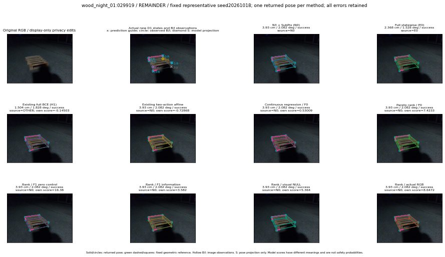

실선은 반환 자세, 초록 점선은 고정 기하 참조입니다. S는 영상 관측이 아닙니다. 점수는 모델별 의미가 다르며 보정된 안전 확률이 아닙니다. 개인정보 처리는 표시 사본에만 적용했습니다.
| 방법·seed | 위치 / 회전 / 공동성공 | 실제 출처 | 선택 후보 | 각 모델 자체 점수 |
|---|---|---|---|---|
| N0 | 3.93 cm / 2.082 deg / success | N0 | N/A | N/A |
| E0 | 2.368 cm / 1.528 deg / success | E0 | N/A | N/A |
| E0_REGENERATED | 2.368 cm / 1.528 deg / success | E0 | E0_REGENERATED | N/A |
| POSEFIX_SUBPIX_PF_ANCHOR | 0.9519 cm / 2.239 deg / success | OTHER | N/A | N/A |
| POSEFIX_SUBPIX_YOLO_ANCHOR | 0.9519 cm / 2.239 deg / success | OTHER | N/A | N/A |
| D1_H1_MLP_s20261018 | 1.504 cm / 1.828 deg / success | OTHER | WD0/ORIGINAL_WD/selected | -0.14503340423107147 |
| D1_H1_MLP_s20261019 | 2.485 cm / 1.71 deg / success | OTHER | G10/ORIGINAL_WD/selected | -0.2720259726047516 |
| D1_H1_MLP_s20261020 | 3.93 cm / 2.082 deg / success | N0 | N0 | -0.770095944404602 |
| D1_H1_PAIR_MLP_s20261018 | 3.93 cm / 2.082 deg / success | N0 | N0 | -1.1786125898361206 |
| D1_H1_PAIR_MLP_s20261019 | 3.93 cm / 2.082 deg / success | N0 | N0 | -0.9820922017097473 |
| D1_H1_PAIR_MLP_s20261020 | 3.93 cm / 2.082 deg / success | N0 | N0 | -0.5041214227676392 |
| D1_H1_PAIR_ROLE_AFFINE_s20261018 | 3.93 cm / 2.082 deg / success | N0 | N0 | -0.7286781668663025 |
| D1_H1_PAIR_ROLE_AFFINE_s20261019 | 3.93 cm / 2.082 deg / success | N0 | N0 | -0.7407113313674927 |
| D1_H1_PAIR_ROLE_AFFINE_s20261020 | 3.93 cm / 2.082 deg / success | N0 | N0 | -0.5485420227050781 |
| R_CONT_F0_s20261018 | 3.93 cm / 2.082 deg / success | N0 | N0 | 0.5300940871238708 |
| R_CONT_F0_s20261019 | 3.93 cm / 2.082 deg / success | N0 | N0 | 0.5755059123039246 |
| R_CONT_F0_s20261020 | 3.93 cm / 2.082 deg / success | N0 | N0 | 0.5269705057144165 |
| R_ORDER_F0_s20261018 | 3.93 cm / 2.082 deg / success | N0 | N0 | 7.423295497894287 |
| R_ORDER_F0_s20261019 | 3.93 cm / 2.082 deg / success | N0 | N0 | 4.103486061096191 |
| R_ORDER_F0_s20261020 | 3.93 cm / 2.082 deg / success | N0 | N0 | -1.946377158164978 |
| R_ORDER_F1_ZERO_s20261018 | 3.93 cm / 2.082 deg / success | N0 | N0 | 16.380056381225586 |
| R_ORDER_F1_ZERO_s20261019 | 3.93 cm / 2.082 deg / success | N0 | N0 | 10.020938873291016 |
| R_ORDER_F1_ZERO_s20261020 | 3.93 cm / 2.082 deg / success | N0 | N0 | 10.041318893432617 |
| R_ORDER_F1_s20261018 | 3.93 cm / 2.082 deg / success | N0 | N0 | 3.581951856613159 |
| R_ORDER_F1_s20261019 | 3.93 cm / 2.082 deg / success | N0 | N0 | 9.137214660644531 |
| R_ORDER_F1_s20261020 | 3.93 cm / 2.082 deg / success | N0 | N0 | 0.733701229095459 |
| V_ORDER_NULL_s20261018 | 3.93 cm / 2.082 deg / success | N0 | N0 | 5.3639984130859375 |
| V_ORDER_NULL_s20261019 | 3.93 cm / 2.082 deg / success | N0 | N0 | 4.246450901031494 |
| V_ORDER_NULL_s20261020 | 3.93 cm / 2.082 deg / success | N0 | N0 | 4.337336540222168 |
| V_ORDER_RGB_s20261018 | 3.93 cm / 2.082 deg / success | N0 | N0 | 8.647171020507812 |
| V_ORDER_RGB_s20261019 | 3.93 cm / 2.082 deg / success | N0 | N0 | 3.6979122161865234 |
| V_ORDER_RGB_s20261020 | 3.93 cm / 2.082 deg / success | N0 | N0 | -8.025308609008789 |